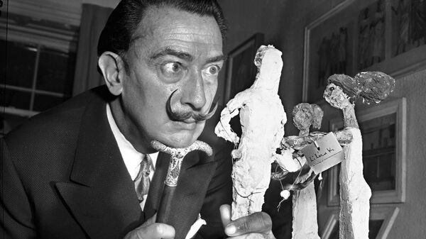

- В краткой биографии Сальвадора Дали он обычно именуется художником-сюрреалистом, так как именно работы в этом жанре принесли ему славу. Однако, сюрреализму он посвятил лишь первую половину жизни, после чего охладел к нему и занялся академической (классической) живописью.
- В детстве он был капризным и вредным ребёнком. Будущий живописец рано понял, что может добиваться своего капризами и манипуляцией, чем он и пользовался, чтобы привлекать к себе внимание.
- В жизни Сальвадора Дали главной женщиной была его жена Гала, которую при рождении звали Еленой Дьяконовой. Она была русской из Казани, и для художника она была музой и источником вдохновения.
- Сейчас маэстро по праву считают одним из самых известных художников Испании. Однако, сам он всегда подчёркивал, что он не испанец, а каталонец, гордясь своей национальностью.
- У него был старший брат, которого тоже звали Сальвадором, но он умер за несколько лет до рождения будущего живописца. Позднее родители сказали ему, что он является реинкарнацией своего покойного брата.
- Сам Сальвадор Дали бесконечно восхищался работами мастеров эпохи Возрождения. Он буквально преклонялся перед творчеством Микеланджело, Леонардо да Винчи и других великих художников. Впрочем, его любимым живописцем был Франсиско Гойя.
- Сам Сальвадор Дали бесконечно восхищался работами мастеров эпохи Возрождения. Он буквально преклонялся перед творчеством Микеланджело, Леонардо да Винчи и других великих художников. Впрочем, его любимым живописцем был Франсиско Гойя.
- Известно, что художник недолюбливал детей. Одним из его странных развлечений было приходить на детские площадки и дразнить детишек – маэстро у них на глазах доставал из кармана леденцы, облизывал и бросал в грязь.
- Именно он создал логотип компании “Чупа-чупс”. Когда к Сальвадору Дали обратились представители компании, он взялся за заказ, но вместо денег потребовал обязательство привозить ему коробку леденцов каждую неделю, причём пожизненно.
- Талант в живописце проявился очень рано, и картины писать он начал, когда был ещё ребёнком. Первая выставка его полотен состоялась, когда ему было всего 14 лет.
- У Сальвадора Дали была странная привычка спать, сидя на стуле и зажав в руке связку ключей. Под руку с ключами он ставил железную миску, и, когда он окончательно проваливался в сон, пальцы его разжимались, ключи падали и будили его. Дали утверждал, что это помогает ему поймать тонкое вдохновение, обитающее на грани сна и яви.
- С женой отношения у них тоже были очень своеобразные. Она заставила его построить себе отдельную загородную резиденцию, причём сам художник мог посещать супругу, только испросив у неё на то разрешение в письменном виде.
- С женой отношения у них тоже были очень своеобразные. Она заставила его построить себе отдельную загородную резиденцию, причём сам художник мог посещать супругу, только испросив у неё на то разрешение в письменном виде.
- Приехав в 1934 году в Нью-Йорк, маэстро изрядно шокировал горожан. Отправившись на прогулку по нью-йоркским улицам, он с невозмутимым видом нёс под мышкой двухметровый батон хлеба, испечённый специально для этой цели.